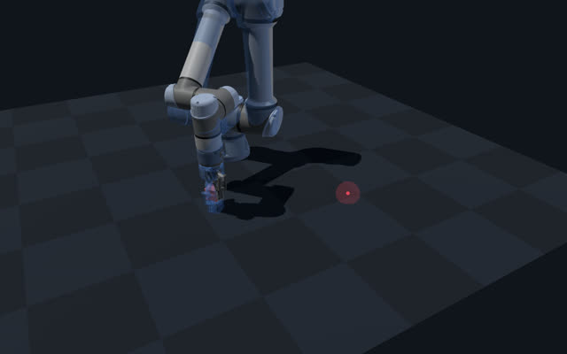
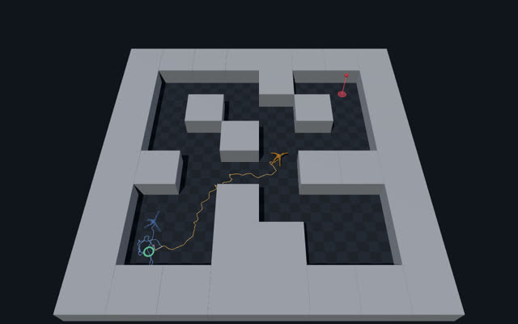
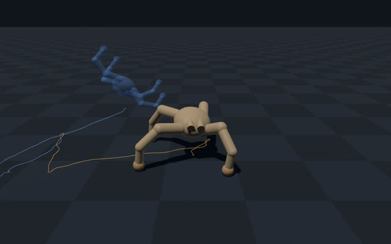
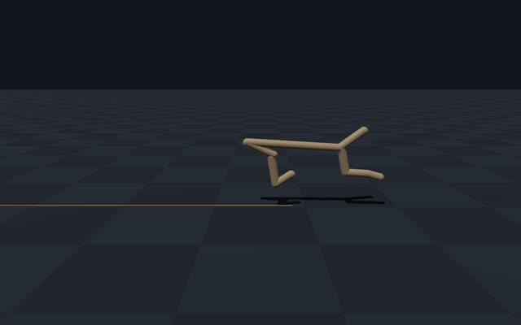
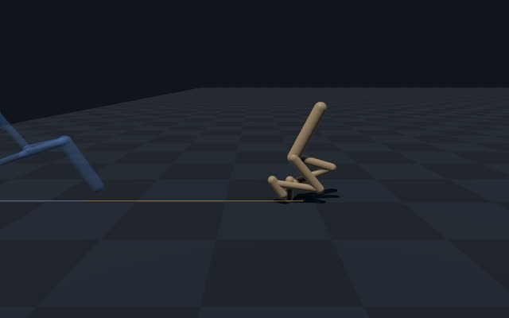
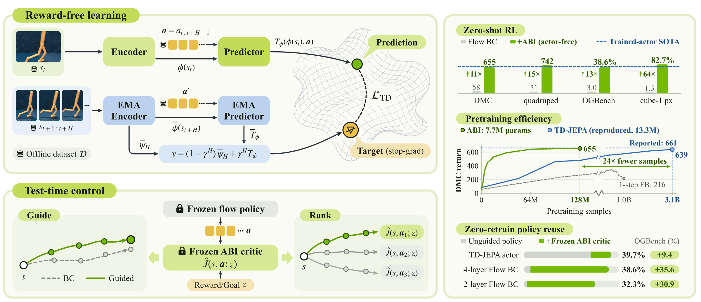
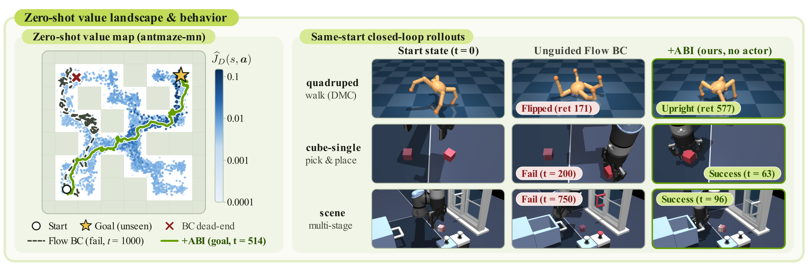
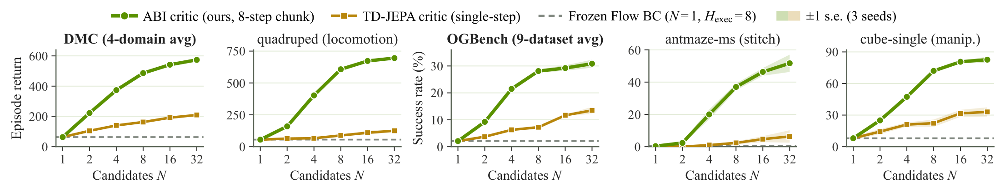
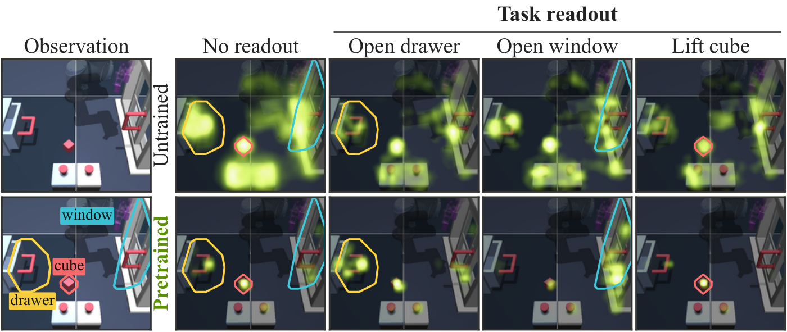

A narrated overview with captions: why one critic can guide many policies, the method in three steps, episodes recorded in the playground below, and the main results. Green: a frozen policy guided by ABI's critic. Gray: the same policy without ABI, from the same start.
Behavior-cloning policies show strong ability in sequential control by generating coherent multi-step action chunks, yet their purely imitative objective limits zero-shot generalization to unseen tasks. While offline reinforcement learning offers principled policy improvement, existing methods either require task-specific reward supervision or remain tied to a specific actor during critic training or policy deployment, inflating training cost and restricting cross-policy generalization. We observe that evaluating actions under the data-collecting behavior largely preserves their relative value ordering across target policies, offering a way around actor coupling. Combining this property with reward-free successor prediction, we propose Actor-Free Behavior-Induced Representations (ABI) to learn multi-horizon action-chunk representations from unlabeled trajectories without reward supervision or actor training. At test time, pairing the frozen representation with lightweight task readouts forms a chunk critic that guides target policies without parameter updates and transfers directly across distinct unseen policies. Our analysis establishes when the value ordering is preserved across policies and when selecting among proposed chunks improves closed-loop return. Across 65 locomotion, navigation, and manipulation tasks, ABI's chunk critic guides weak imitation policies to match or surpass zero-shot RL baselines with high sample efficiency, outperforms existing zero-shot critics on identical proposals, and improves externally trained RL actors without retraining. From raw pixels, ABI delivers substantial guidance gains and surpasses prior zero-shot RL baselines on visual manipulation, highlighting its potential for visuomotor control.
Choose a task, place a goal or switch the task while the agent moves, and watch ABI's critic guide a frozen policy. On Cube, the same critic also guides the trained actor of TD-JEPA. The physics (MuJoCo, WebAssembly) and all networks run in your browser, and nothing is sent anywhere. Each environment loads its own models (about 30 to 60 MB).







antmaze-mn, the zero-shot score ĴD(s, a) over recorded state–chunk pairs rises along the corridor toward an unseen goal. Unguided Flow BC stalls in a dead end, whereas ABI guides it to the goal. Right: From identical initial states, ABI guidance keeps quadruped upright, places the block at the goal on cube-single, and opens both the drawer and the window on scene. Rollouts use BFN16 with Hexec=8.

scene for the pixel critic.@article{yao2026abi,
title = {{ABI}: Actor-Free Behavior-Induced Representations for Zero-Shot Test-Time Guidance},
author = {Yao, Yifei and Zou, Yude and Jiao, Guanbo and Ma, Jianming and Gao, Xing and Shen, Chunhua},
journal = {arXiv preprint arXiv:2611.30636},
year = {2026}
}